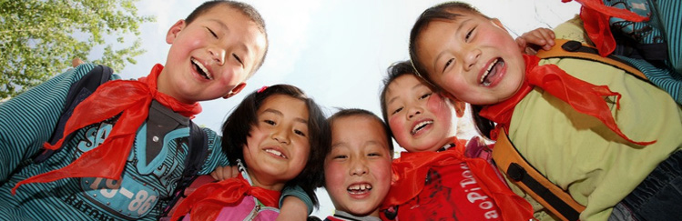

扶贫救灾助残
海达电器携手TCL集团、海尔集团、美的集团“扶贫助残”启动仪式在锡林浩特市举行
爱心助残，情暖万家。2013年6月21日，海达电器携手TCL集团、海尔集团、美的集团“扶贫助残”启动仪式在锡林浩特市举行。在活动现场，海达电器携手TCL集团、海尔集团、美的集团为锡林浩特市捐赠了价值200万元的扶贫助残惠民基金卡，并向部分残疾人代表发放了家用电器。
“海尔爱心专项基金”捐赠仪式昨日举行
2013年8月1日，海尔集团与青岛市残疾儿童医疗康复基金会的“海尔爱心专项基金”捐赠仪式在青岛市妇幼医院隆重举行，海尔集团公司工会主席明国庆和青岛市妇幼医院院长陈文一出席了捐赠仪式，更多的病残儿童将因此获益。
海尔集团向雅安地震灾区捐款1000万元
2013年4月20日，四川雅安芦山发生7.0级地震，海尔集团及旗下两家上市公司高度重视，宣布共同向灾区捐款1000万元，用于采购救灾物资，开展灾后重建，关注灾区人民心理恢复，全力帮助灾区人民早日重建家园。
“海尔爱心助学工程”捐赠仪式
2012年10月19日，省残疾人福利基金会与海尔集团在济宁市汶上县举行“海尔爱心助学工程”捐赠仪式。由海尔捐赠10万元，继续支持省残疾人福利基金会开展助学工程，在济宁市汶上县特殊教育学校建立一个“海尔电化教学认知训练室”。